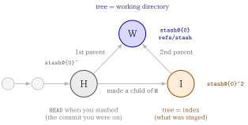

git stashlets youpullwith dirty local changesgit stash popis all-or-nothing- To take back part of a stash, extract it path by path or hunk by hunk instead of popping
# step 1: -u also stashes untracked files
git stash push -u -m "wip"
# step 2
git pull
# step 3: check what is in there (only git-tracked files show up)
git stash show --name-only stash@{0}
# step 4: diff of one file
git diff 'stash@{0}^' 'stash@{0}' -- path/to/file
# step 5: pick hunks, worktree only
git restore -p --source='stash@{0}' -- path/to/file
# step 6: only once you are done
git stash drop stash@{0}- Extracting a path overwrites the working-tree file with the stash version. It is not a merge
- There is no command to directly add files to an existing stash
🎯 Goal
🔎 Objective
Suppose that
- you have uncommitted local changes and
git pullrefuses to run, or - you simply do not want to merge upstream on top of a dirty tree.
Then, the usual workflow is:
git stash push -m "wip"
git pull
git stash pop⚠️ Problems
After pulling, how do you look inside the stash and take back only the parts you still want?
git stash pop is the problem.
- It replays the entire stash
- If the pull touched the same lines, hands you conflict markers across every file at once.
Often you only wanted two of the five stashed files, and the rest were scratch edits the upstream change has already made obsolete.
How a stash is stored
A stash entry is not merely a temporary storage place for changed files, but a small commit graph, which is why you can address its parts with ordinary commit syntax. The git-stash documentation describes it as:
A stash entry is represented as a commit whose tree records the state of the working directory, and its first parent is the commit at
HEADwhen the entry was created. The tree of the second parent records the state of the index when the entry is made, and it is made a child of theHEADcommit.
and gives this ancestry graph, where H is the HEAD commit, I records the index and W records the working tree:

Arrows point from parent to child, so W’s two parents are H (first) and I (second), and those are exactly what ^1 and ^2 select.
W is what stash@{0} resolves to. So the two refs you need are:
| Ref | Graph node | Holds | Use it to |
|---|---|---|---|
stash@{0} |
W |
the working-tree state when you stashed | extract tracked files |
stash@{0}^ |
H |
the commit you were on (HEAD back then) |
anchor a diff so only your changes show |
stash@{0}^2 |
I |
the index state when you stashed | recover what was staged |
Verify the shape yourself with:
git log --oneline --graph stash@{0}git stash push is equivalent to git stash
push is the full form of the save operation, and it is what every option in this post attaches to. The git-stash documentation gives the synopsis as:
git stash push [-p | --patch] [-S | --staged] [-k | --[no-]keep-index]
[-u | --include-untracked] [-a | --all] [-q | --quiet]
[(-m | --message) <message>]
[--pathspec-from-file=<file> [--pathspec-file-nul]]
[--] [<pathspec>...]Save your local modifications to a new stash entry and roll them back to
HEAD(in the working tree and in the index). The<message>part is optional and gives the description along with the stashed state.
So the two commands below do the same thing — push is the default subcommand and may be omitted for a quick snapshot:
git stash push -m "wip" # explicit
git stash -m "wip" # same thingWhy the docs still recommend spelling out push
The equivalence stops as soon as you pass a pathspec. Quoting the documentation:
For quickly making a snapshot, you can omit “push”. In this mode, pathspec elements are only allowed after a double hyphen
--to prevent a misspelled subcommand from making an unwanted stash entry.
Without push, Git cannot tell a pathspec from a subcommand you fumbled, so it refuses rather than guessing:
$ git stash a.txt
fatal: subcommand wasn't specified; 'push' can't be assumed due to unexpected token 'a.txt'That is a safety feature, not a bug. It is what stops git stash puhs or git stash lst from silently stashing your whole working tree instead of erroring:
$ git stash puhs
fatal: subcommand wasn't specified; 'push' can't be assumed due to unexpected token 'puhs'To limit a bare git stash to certain paths you must add --:
| Command | Result |
|---|---|
git stash push a.txt |
stashes a.txt only |
git stash -- a.txt |
stashes a.txt only |
git stash a.txt |
fatal — push cannot be assumed |
Prefer git stash push whenever you pass a pathspec: it needs no --, and it makes the command read the same as every other option-bearing form.
push is also the only form that takes the narrowing options, all of which leave the rest of your changes in the working tree:
| Option | Stashes |
|---|---|
-p, --patch |
hunks you pick interactively |
-S, --staged |
only what is staged in the index |
-u, --include-untracked |
tracked changes plus untracked files |
-a, --all |
the above plus ignored files |
-k, --keep-index |
everything, but leaves the index intact in the worktree |
-S is the useful one when the operations side staged the YAML edits it wants to keep and left scratch edits unstaged:
$ git status --short
M a.txt
M b.txt
$ git stash -S -m "staged only"
Saved working directory and index state On main: staged only
$ git status --short
M b.txt-u, --include-untracked option
-u is short for --include-untracked
With -u, Git also stashes untracked files that are not currently tracked by Git. Git collects these files into a separate commit and attaches it to the stash as an additional parent.
A stash created with -u has three parents.
What I did is
## step 1: git init
git init
## step 2: add README.md and initial commit
touch README.md
git add README.md
git commit -m "initial commit"
## Step3: add mofitication to git-tracked file
echo fixed > README.md
## Step 4: create new file
touch esample.txt
## Step 5: git stash
git stash -u -m "wip"Then,
% git log --oneline --graph stash@{0}
*-. 8afdbfe (refs/stash) On main: wip
|\ \
| | * 6d00d09 untracked files on main: 5d1f1ea initial commit
| * 7bbada3 index on main: 5d1f1ea initial commit
|/
* 5d1f1ea (HEAD -> main) initial commitstash@{0}
├── parent 1 → HEAD before stashing
├── parent 2 → the tracked changes (the index)
└── parent 3 → the untracked files # only with -uThat third parent is addressable as stash@{0}^3, and it is the piece the H/I/W graph above does not cover.
Three lines leave 8afdbfe, so stash@{0} is not a single commit — it is a commit with three parents:
8afdbfe <- stash@{0}
/ | \
v v v
5d1f1ea 7bbada3 6d00d09
^1 ^2 ^3| Commit | Ref | Records |
|---|---|---|
5d1f1ea |
stash@{0}^1 |
the HEAD you were on before stashing |
7bbada3 |
stash@{0}^2 |
the index(what was staged) |
6d00d09 |
stash@{0}^3 |
the untracked files (-u only) |
8afdbfe |
stash@{0} |
the stash itself — its tree is the working directory |
untracked files are not stored in the stash@{0} body itself, but in the third parent stash@{0}^3
Inspecting the untracked commit
^3 is an ordinary commit, so ordinary commit commands work on it:
git show --stat stash@{0}^3 # which untracked files were stashed
git ls-tree -r --name-only stash@{0}^3 # full file listAnd a single file can be pulled straight out of it:
git restore --source='stash@{0}^3' -- notes.md🔨 Walking through the operations case
Consider a Docker-based HTML hosting service. Two sides touch the same repository:
- the development side commits a new version and pushes it
- the operations side runs
git pullto take that version, but also edits git-tracked YAML files directly to keep the service running
Both sides therefore end up editing the same tracked file:
config.yaml
│
┌────────────────┴────────────────┐
│ │
development side operations side
committed and pushed edited in place, uncommitted
│ │
└────────── same file ────────────┘Running git pull in that state either refuses outright or merges upstream on top of a dirty tree. So the operations side stashes first.
Step 1: stash local changes and pull
Commands
git stash push -m "wip" # tracked modifications only
git stash push -u -m "wip" # -u (--include-untracked) also stashes new files
git pullStep 2: see what is inside the stash
Commands
git stash list # every entry
git stash show --name-only stash@{0} # which tracked files changed
git stash show -p stash@{0} # full patch of tracked changes
git stash show --only-untracked --name-only stash@{0} # the -u filesgit stash show <stash> -- <path> is not valid
The documented signature has no pathspec slot at all
git stash show [-u | --include-untracked | --only-untracked] [<diff-options>] [<stash>]So a trailing path is read as a second revision:
$ git stash show -p 'stash@{0}' -- a.txt
Too many revisions specified: 'stash@{0}' 'a.txt'For a single file, diff the stash against its parent instead:
# comapre stash with its parent
git diff 'stash@{0}^' 'stash@{0}' -- path/to/file
# comapre stash with the HEAD
git diff HEAD 'stash@{0}'Why stash@{0}^ and not HEAD
After a pull, HEAD has moved. Diffing against HEAD mixes your stashed edits with everything the pull brought in. stash@{0}^ is the commit you were sitting on when you stashed, so it isolates your own changes:
| Command | Shows |
|---|---|
git diff 'stash@{0}^' 'stash@{0}' |
only the changes you stashed |
git diff HEAD 'stash@{0}' |
your changes plus everything the pull added, inverted |
git diff 'stash@{0}' |
stash vs your current working tree |
Step 3: take back only part of the stash
File by file
Commands
# modern form — worktree only, index untouched
git restore --source='stash@{0}' -- path/to/file
# legacy form — writes the worktree AND stages the file
git checkout 'stash@{0}' -- path/to/fileThe two differ in what they touch:
| Command | git status afterwards |
Index |
|---|---|---|
git restore --source=<stash> -- <path> |
M path |
untouched |
git checkout <stash> -- <path> |
M path |
staged |
Hunk by hunk
When a single file holds both edits you want and edits you don’t, add -p:
git restore -p --source='stash@{0}' -- path/to/fileGit walks you through each hunk:
@@ -1 +1,2 @@
a
+a2
(1/1) Apply this hunk to index and worktree [y,n,q,a,d,e,?]?Answer y to take a hunk, n to skip it, e to edit it by hand, q to stop.
Untracked files
The main stash commit does not contain untracked paths, so the obvious command fails:
$ git restore --source='stash@{0}' -- path/to/new-file
error: pathspec 'path/to/new-file' did not match any file(s) known to gitThose files sit on the undocumented third parent, so extraction needs ^3:
git restore --source='stash@{0}^3' -- path/to/new-fileIf you want all of them back rather than one path, git stash pop restores untracked files along with everything else, and it avoids relying on ^3.
Step 3 (Optional): take everything back with a merge
Step 3 extracts by path, and extraction overwrites: git restore --source=<stash> -- <file> and git checkout <stash> -- <file> replace the working-tree file wholesale with the stash version.
When upstream also touched the file, you want a real three-way merge instead:
Commands
# merge the stash into the working tree, then drop the entry
git stash pop
# same merge, but keeps the stash entry
git stash applypop replays the stash on top of the post-pull tree. Where the two sides changed different lines Git merges them for you; where they collide you get ordinary conflict markers to resolve:
$ git stash pop
Auto-merging config.yaml
CONFLICT (content): Merge conflict in config.yamlpop does not drop the stash
- On conflict the entry stays in the list, so nothing is lost. You need resolve the markers, then
git stash drop stash@{0}yourself - A clean
pop, by contrast, drops it for you - Use
git stash applywhen you would rather keep the entry either way.
pop is also the way to get all untracked files back at once, without relying on the ^3 parent from Step 3.
If you are unsure which side touched what, inspect first with the git diff 'stash@{0}^' 'stash@{0}' command from Step 2, or hand-pick hunks with git restore -p, which shows you the conflict-prone lines before you accept them.
Step 4: clean up
Commands
git stash drop stash@{0} # once you have everything you needExtracting files by path leaves the stash entry intact — unlike pop, nothing is consumed. Drop it only after you have confirmed the working tree holds what you want, because drop is not undoable through the stash UI.
The documentation is blunt that dropped entries “cannot be recovered through the normal safety mechanisms”, but offers this incantation to list stash commits that are still in the repository and merely unreachable:
git fsck --unreachable |
grep commit | cut -d\ -f3 |
xargs git log --merges --no-walk --grep=WIPThen revive one with git stash apply <sha>.
Note the --grep=WIP filter only matches the default stash message (WIP on <branch>). If you stashed with -m "wip", the message becomes On <branch>: wip and this command silently finds nothing. Drop the --grep to see every unreachable merge commit:
git fsck --unreachable |
grep commit | cut -d\ -f3 |
xargs git log --merges --no-walk --onelineReviewing a stash in a GUI with difftool
git difftool takes the same arguments as git diff, so every form above works with a visual tool.
Commands
# only your stashed changes
git difftool 'stash@{0}^' 'stash@{0}'
# one file
git difftool 'stash@{0}^' 'stash@{0}' -- path/to/file
# stash vs current worktree
git difftool 'stash@{0}'
# whole change set at once
git difftool -d 'stash@{0}^' 'stash@{0}'-d (--dir-diff) is the one that matters here: instead of prompting per file, it materialises both sides into temporary directories and opens the tool once. In VS Code you get a side-by-side tree of every stashed file, which is how you decide what to extract before running the commands from Step 3.
Summary: Choosing between the approaches
| Situation | Command |
|---|---|
| Want the whole stash back, upstream didn’t touch it | git stash pop |
| Want the whole stash back, upstream did touch it | git stash pop, then resolve conflicts |
| Want a few files, upstream didn’t touch them | git restore --source='stash@{0}' -- <paths> |
| Want some hunks within a file | git restore -p --source='stash@{0}' -- <file> |
| Want one untracked file back | git restore --source='stash@{0}^3' -- <file> (undocumented) |
| Just want to look before deciding | git difftool -d 'stash@{0}^' 'stash@{0}' |
Glossary
- def: stash entry
description: |
A commit whose tree records the working directory. Its first parent
is the HEAD at stash time; its second parent records the index.
A -u stash also gets an undocumented third parent holding the
untracked files.
- def: stash@{0}
description: |
Reflog syntax for the most recent entry; refs/stash holds the
latest and older ones live in its reflog. `stash@{2.hours.ago}`
works too, and a bare integer n is equivalent to stash@{n}.
Quote it in zsh/bash so the braces survive.